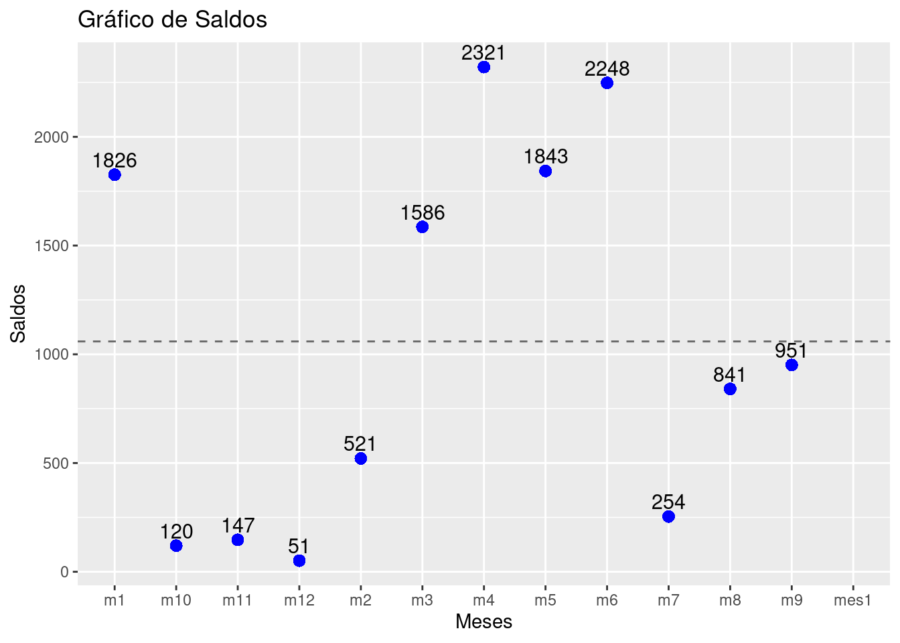
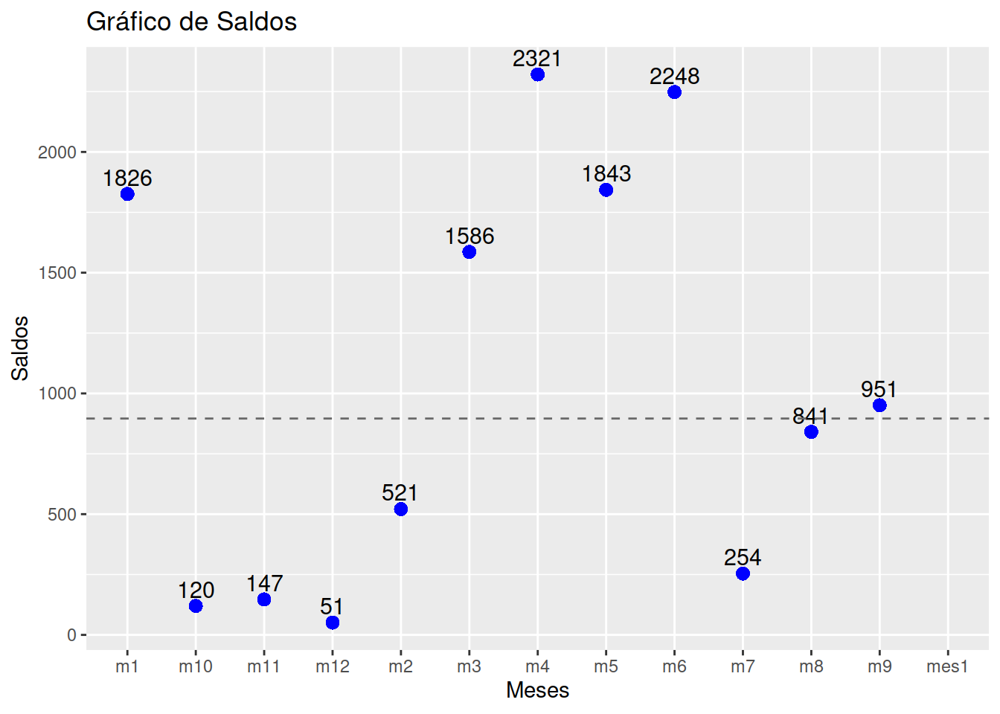

Un indicador en contexto estadístico, es una medida numérica que se utiliza para resumir, describir o representar información sobre un conjunto de datos. Los indicadores proporcionan información cuantitativa que ayuda a comprender las características, tendencias, distribuciones y patrones de los datos. Los indicadores estadísticos son herramientas fundamentales en la estadística y la investigación científica, ya que permiten analizar y tomar decisiones basadas en datos de manera objetiva.
Los indicadores de tendencia central son medidas estadísticas que se utilizan para describir la ubicación o el valor central de un conjunto de datos. Estos indicadores proporcionan información sobre dónde se concentran los datos en una distribución.
\[\bar{x}= \frac{1}{n} \sum_{i=1}^{n} x_{i}\]
Es una de los indicadores estadísticos mas conocidos
Propiedades de la media :
La suma de las desviaciones de los datos con respecto a la media es cero. \(\sum (x_{i}-\bar{x})=0\).
La suma de los cuadrados de las desviaciones de los datos con respecto a un valor \(a\) es mínimo cuando \(a=\bar{x}\).
Si \(x_{i}=k\) para todo \(i\), entonces, \(\bar{x}=k\).
Si a todos los datos de una variable se le suma una constante \(k\), es decir \(y_{i}=x_{i} + k\), entonces \(\bar{y}=\bar{x} +k\)
Si todos los datos de una variable se multiplican por una constante \(k\), es decir \(y_{i}=kx_{i}\), entonces \(\bar{y}=k\bar{x}\)
Si \(z_{i}=a x_{i}+b y_{i}\), donde: a, b constantes y \(x_{i}\), \(y_{i}\) variables, entonces: \(\bar{z}=a\bar{x}+b\bar{y}\)
Un cliente ha presentado los siguiente valores en saldo de cuenta de ahorro durante los úntimos seis meses
[1] 1826 521 1586 2321 1843 2248 254 841 951 120 147 51promedio de doce meses en cuenta de ahorro : $ 1059.1
Me : Es el número que divide la muestra en dos partes de igual proporción (50% : 50%). Es decir que por debajo de él se encuentra el 50% de los datos y por encima el otro 50%.
Para su calculo se ordenan los datos y se determinan la posición correspondiente:
\[ Me= \left\{\begin{array}{lcc} x_{(n+1)/2} & si & \text{n es impar} \\ \\ \dfrac{x_{n/2} + x_{(n/2+1)}}{2} & si & \text{n es par} \end{array} \right. \]
Para el caso de los saldos en cuenta de ahorros tenemos los valores ordenados para determinar el centro
[1] 51 120 147 254 521 841 951 1586 1826 1843 2248 2321En este caso como \(n=6\) es un número par, la mediana corresponde al dato que se encuentra en la posición:
\[ Me = \dfrac{x_{n/2} + x_{(n/2+1)}}{2} = \dfrac{x_{12/2} + x_{(12/2+1)}}{2} = \dfrac{841+951}{2} = 896 \] A diferencia de la media, la mediana es un indicador mas fuerte a cambios que se pueden presentar en los extremos.

Mo : Dato o valor que más se repite. Es utilizada como medida de tendencia central en variables cualitativas. En una tabla o gráfico se puede distinguir fácilmente la moda.
La dsitribución de productos bancarios en una oficina bancaria está descrita en la siguiente tabla :
Producto Frecuencia_Absoluta
1 Cuenta de Ahorro 1279
2 Cuenta Corriente 1066
3 Tarjeta de Crédito 853
4 Préstamo Personal 640
5 Hipoteca 213
6 Inversiones 213En este caso la moda corresponde a Cuentas de Ahorro
La media truncada es similar a la media aritmética, pero excluye un cierto porcentaje de valores atípicos (generalmente un cierto porcentaje de valores extremos) en cada extremo del conjunto de datos antes de calcular la media. Esto lo hace menos sensible a valores atípicos que la media aritmética. Es posible separar el 90% de los datos, quitando un 5% de los datos mas pequeños y un 5% de los datos mayores. En este caso el indicador se llama media truncada al 10% (\(\bar{x}_{_{0.10}}\))
Para la información relacionada con los saldos de cuentas de ahorro se eliminan los tados extremos y se calcula la media con los 10 valores restantes
51 | 120 147 254 521 841 951 1586 1826 1843 2248 | 2321
media truncada al 20% : 1083.2El rango medio es la media de los valores más pequeños y más grandes en un conjunto de datos. Se calcula sumando el valor mínimo y el valor máximo y luego dividiéndolo por 2. Proporciona una medida de la tendencia central que tiene en cuenta los valores extremos.
\[\frac{1}{2}\big(max(x)+min(x)\big)\] Este indicador es fácil de calcular pero es muy sensible a cambios en los extemos o a presencia de datos atípicos
[1] 51 120 147 254 521 841 951 1586 1826 1843 2248 2321\[ RM = \dfrac{2321 + 51}{2} = 1186 \]
La media ponderada se calcula asignando un peso específico a cada valor en un conjunto de datos antes de calcular la media. En una media ponderada, algunos valores tienen más influencia que otros en el cálculo de la media, dependiendo de sus respectivos pesos.
\[\bar{x} = \dfrac{\sum_{i=1}^{n} (w_{i} \hspace{.1cm}x_{i})}{\sum_{i=1}^{n} w_{i}} \] donde :
En al gunos casos el valor individual \(x_{i}\) puede representar la media de un subgrupo \(i\) de la muestra. En este caso la media ponderada se convierte en una media de medias, poderada por el tamaño de cada subgrupo
Para este caso supongamos que se tienen dos estratos o divisiones entre los clientes de cuentas de ahorros :
| Tipo de cliente | núnero de clientes | promedio |
|---|---|---|
| Personas naturales | 892 | 1059.1 |
| Personas jurídicas | 384 | 34623.3 |
\[ \bar{x} = \dfrac{892 \times 1089.1 + 384 \times 34623.3}{892 +384} = 11180.9 \]
La media armónica se calcula dividiendo el número de valores en el conjunto por la suma de los inversos de los valores individuales. Es especialmente útil cuando se trata de datos relacionados con tasas o proporciones, como velocidades promedio o tasas de retorno.
\[H = \dfrac{n}{\frac{1}{x_{1}}+\frac{1}{x_{2}}+ ... + \frac{1}{x_{n}}} \]
Este indicador corresponde al inverso de la media aritmética
Suponga que se desea calcular el rendimiento promedio de dos inversiones diferentes en su cartera: Inversión 1 : rendimiento del 5% Inversión 2 : rendimiento del 10%
Ambas durante un periodo de dos años.
Para calcular la media armónica de estos dos rendimientos, primero se toma el inverso (recíproco) de cada rendimiento. Luego, se promedian estos inversos y se calcula el inverso del resultado para obtener la media armónica
Rendimiento 1 (5%): 1 / 5% = 20 Rendimiento 2 (10%): 1 / 10% = 10
\[ H = \dfrac{2}{\dfrac{1}{0.05}+ \dfrac{1}{0.10}} = 0.06667 \]
La media armónica en este contexto financiero sería del 6.67%. La diferencia con la media aritmética es que la media armónica da más peso a los valores más bajos. Esto puede ser útil en situaciones donde se desee dar mayor importancia a rendimientos más bajos en una cartera de inversiones.
La media geométrica se calcula multiplicando todos los valores en el conjunto de datos y luego tomando la raíz enésima del producto, donde \(n\) es el número de valores en el conjunto. Es útil cuando se analizan datos que tienen un crecimiento exponencial, como tasas de interés o tasas de crecimiento.
Para encontrar su valor se multiplican los valores de \(n\) tasas incrementadas en uno (\(1+r\)) y su a producto se le extrae la raíz \(n\)-esima.
\[MG = \Bigg(\displaystyle\prod_{i=1}^n
(r_{i}+1)\Bigg)^{1/n}\]
Se itene las siguientes tasas de cremiento de las ventas durante los úntomos 5 meses : 5%, 3%, 7%, 2% y 6%. Se desea calcular la tasa promedio de crecimiento en ventas durante los últimos cinco meses.
\[ MG = \sqrt[5]{1.05 \times 1.03 \times 1.07 \times 1.02 \times 1.06} = \sqrt[5]{1.25117} = 1.045835 \] La tasa de crecimiento promedio es igual a : \(4.58%\)
Otra forma de calcular la tasa promedio es:
# Ejemplo de cálculo de media geométrica en R
tasas_crecimiento <- c(0.05, 0.03, 0.07, 0.02, 0.06)
media_geometrica <- exp(mean(log(1 + tasas_crecimiento))) - 1
print(paste("La media geométrica de las tasas de crecimiento es:", media_geometrica))[1] "La media geométrica de las tasas de crecimiento es: 0.0458352307603478"